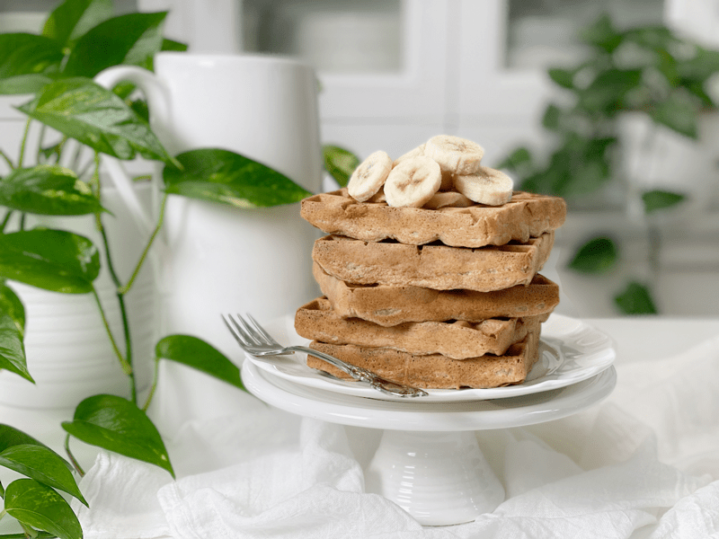
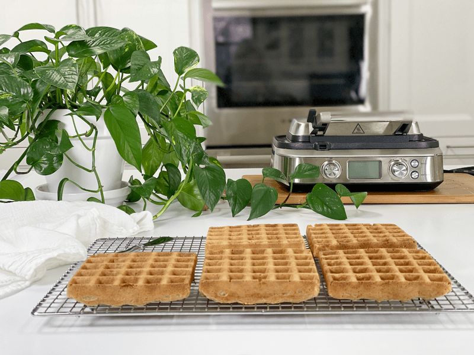

Oatmeal Waffles | Oil-Free | Nut-Free
A few days back, I was talking on the phone with my biological dad. I felt it was important to say biological because, for those of you who have been around for quite some time, you know I talk about my family often. And to reduce confusion, I have two dads. Both are AMAZING, and I LOVE them both to the moon and back. Anyway, as we were talking on the phone, we got into an in-depth food discussion.

One food item in particular that we got hung up on was waffles. I don’t know who mentioned it first; I think we were both flipping through our memory banks, indexing all the comfort foods we could think of. When waffles came into the picture, Dad imagined himself motoring down, with IHOP (a restaurant chain in the US) in his sights. His voice was drifting as he murmured the words: fluffy waffles, butter, pancake syrup, whipped cream, berries…. I thought we had lost connection due to the still air that sat between us. Then Dad finally sighed as he came back to the current reality of things. COVID-19 had put the kibosh on his dreams of traveling outside of the house.
After I hung up the phone, I decided to pop out into the Studio Kitchen and make some waffles. Of course, I wasn’t very nice, and text messaged him some of the photos of my creations. Shame on me! I don’t suppose that seems very nice to an outsider, but I will admit, we had fun teasing one another.
My Goal for This Recipe
I always have a goal in mind when creating recipes, and today was no different. I have been creating quite a few different waffle recipes, which may seem silly, but each one has enough variances to shift things up. Today, I aimed for low-sugar, fat-free, nut-free, gluten-free, vegan waffles that left me satiated and feeling good. Plus, I had to lean on what ingredients I had on hand. These waffles are medium in density, they brown nicely due to the natural sugars found in the banana, and they have a gentle oat undertone flavor. I was able to check all my requirements off and call this recipe…GOOD!
Batch Cooking
These waffles freeze beautifully. I highly recommend making several batches so you can build a breakfast staple in your freezer. Every once in a while, Bob gets a craving for waffles. When I say, “Oh, there are some in the freezer, pop a few in the toaster,” his eyes light up. I go more in-depth down below.
Recipe Blogger Challenges
When I was taking a few photos to go along with this post, I wanted to make them Instagram worthy…I wanted them to make you drool, but to be honest, I wasn’t willing to sacrifice a stack of waffles for that purpose. I intended to freeze them, which I couldn’t do once soaked in maple syrup. Besides, I find that you can reduce the amount of syrup needed when you put a little dipping bowl beside your plate. With each bite, I just dip the tip into the maple syrup to prevent the waffle from soaking up all the syrup, which creates an autopilot reaction to keep adding more. You’d be amazed as to how much sugar a person consumes when it is poured over waffles. So, I hope my plain Jane photo still draws you in and that you can appreciate my practicality.
Every wonder how oats grow? Click (here), I was fascinated while writing this post.
Technique and Tips
No-Oil Waffles
- This recipe was purposely created to be oil/fat-free, but that’s due to my own personal preference. It really doesn’t need added fat, and my husband, who likes healthy fatty foods, found these delicious.
- One area that might require some oil is the waffle iron. I didn’t experience any sticking, but if you do, lightly spray a thin coat of oil on the iron grills. If they still stick, you might have an old waffle iron that might require replacing.
Preheat the Waffle Iron
- It’s important to pour the batter onto a hot waffle iron. You should actually hear the batter sizzle on contact. The outer crust will immediately begin to set and crisp. Moisture in the batter quickly turns to steam and evaporates out the sides of the pan. If the iron isn’t hot, none of this happens, and the waffles will be soggy and squishy.
Extra Crispiness
- Bob and I prefer our waffles crispy, so once the waffles are done in the waffle machine, we will pop them in the toaster. It sounds redundant, but it works with little effort.
- Another tip is to place the cooked waffles on a wire rack so the air can circulate around them, preventing sogginess.
- You need to keep in mind that we are not using traditional ingredients such as eggs, baking soda, baking powder, and milk. All of these ingredients perform a chemistry act that gives waffles that light, airy, and crispy texture. We are challenging the limits of waffle-making, with unique ingredients.
Make Every Bite Count
- Waffles are a vehicle for toppings, so choose them wisely. Topping ideas: spread a thin layer of fresh fruit jam over the top, drizzle pure maple syrup or honey in the waffle pockets; use a dollop of nut butter, or chopped nuts; sprinkle some ground flaxseed over the surface, or dice up fresh fruit. The possibilities are endless.
- Use ripe bananas to coax out their full sweet potential.
- If you have no aversion to salt, please don’t skip in it. Use good quality sea salt. It helps elevate the other ingredients and has 84 trace minerals in it. Read more about that (here).
- Even though waffles are a simple breakfast food, plate them up beautifully even if it’s just you. It’s a way to honor the food, and trust me, food presentation is just as essential to the success of a dish as its taste and flavor. Thoughtful presentation leads to a more enjoyable meal.
 Ingredients
Ingredients
Yields 6 (4×4″ square waffles)
- 2 1/2 cups oats
- 2 1/2 cups water
- 1 ripe banana
- 1 Tbsp vanilla extract
- 1 1/2 tsp Ceylon cinnamon
- 1/2 tsp sea salt
Preparation
- Blend everything together in a blender until creamy. Let it sit for 10 minutes (don’t skip this step).
- Preheat the waffle iron while the oat mixture is resting.
- You should actually hear the batter sizzle on contact. The outer crust will immediately begin to set and crisp. Moisture in the batter quickly turns to steam and evaporates out the sides of the pan. If the iron isn’t hot, none of this happens, and the waffles will be soggy and squishy.
- Pour the batter into the center of the waffle iron. Since machines run in different sizes, add enough so the batter can slightly reach out to the sides.
- I didn’t need to use any oil to prevent sticking with my waffle machine. If you feel unsure about the machine you are using, you can either do a small test run, or you can lightly coat all cooking surfaces of the waffle iron to help avoid sticking.
- You might have to add a bit more water to keep the batter at a pancake batter consistency if it starts to thicken as it sits. If the batter is really thick, the waffles will be dense and possibly undercooked in the middle.
- With my waffle machine set on “Custom,” I cooked them for 7 minutes (until the steam coming out reduced).
-
Open the waffle iron lid and leave it open about for 20 seconds (this will help avoid sticking) before gently removing the waffle with a butter knife or fork.
- You can either plate the waffles up for the whole family or prepare them for freezing.
- Either way, place them on wire racks so air can circulate around them to prevent them from getting soggy.
-
Repeat until the batter is used up.
- Topping ideas: spread a thin layer of jam over the top, drizzle pure maple syrup or honey in the waffle pockets; try a dollop of nut butter, or chopped nuts; sprinkle some ground flaxseed over the surface, or dice up fresh fruit. The possibilities are endless.
Batch Cooking
- Batch cooking is priceless. The only way to preserve waffles long term is to freeze them.
- You will want to flash freeze them first by arranging them on a baking sheet in a single layer. Pop the tray into the freezer until they are frozen.
- Once frozen, remove from the trays and slip into a freezer-safe container or bag. Freeze for up to 3 months.
- You can also place a piece of parchment or wax paper between each waffle and freeze in a stack, but I would avoid that if possible because both parchment paper and wax paper are pricey and are typically one use, which leads to more waste. Parchment paper is coated with silicone to make it non-stick, making it difficult to recycle, and wax paper is coated with wax, so it’s not recyclable either.
- When you are ready for a waffle, remove one from the container and pop it into the toaster to warm and crisp it up.
- Serve and enjoy!

© AmieSue.com